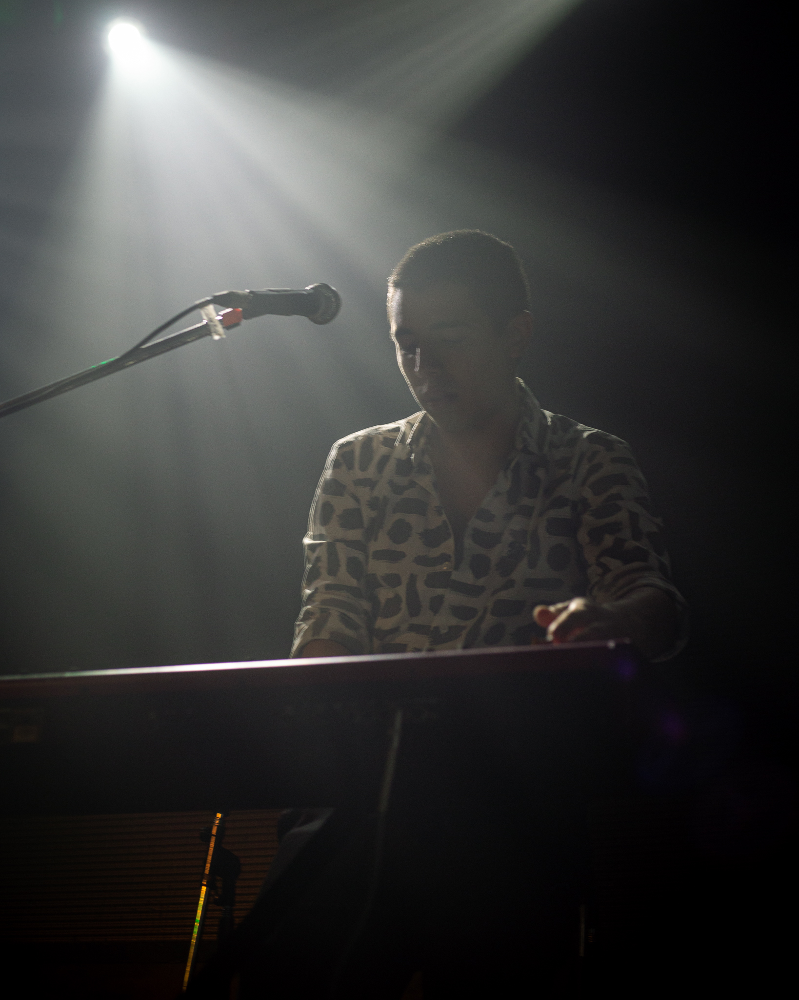
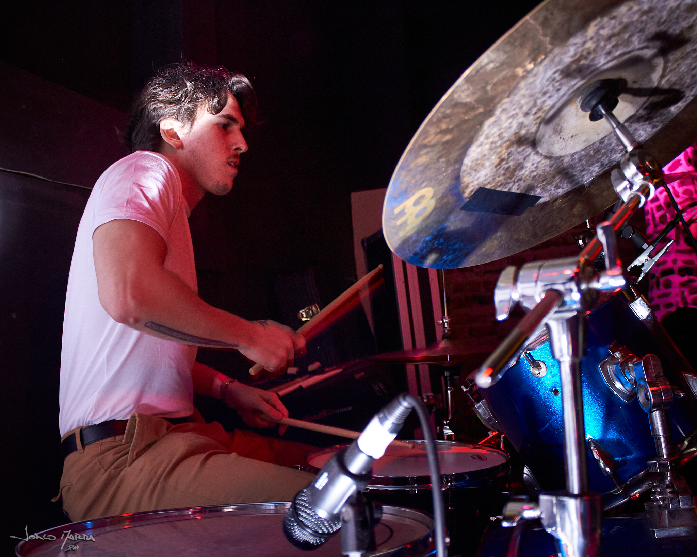
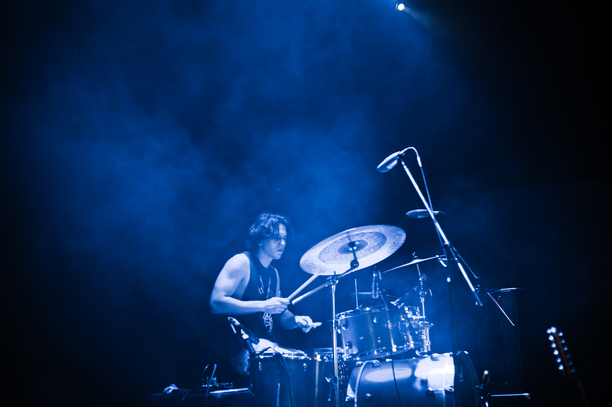

Provisorio es una banda de pop/rock con influencias en la musica de los 80s, 90s y 00 oriunda del Oeste de la provincia de Buenos Aires. La banda se compone por Franco Terrile como guitarrista, Lautaro Terrile como baterista, Martín Patrón como tecladista, y Tomás Sconfianza como vocalista. Tuvieron sus inicios como agrupación a principios de 2018, y en 2021 sacaron su primer material inédito titulado "Soirée", un EP que contiene 5 canciones entre las cuales se encuentra "Horizontes", su primer single.
Galeria




